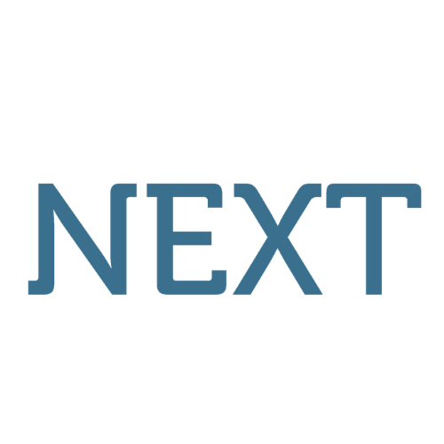

Capofila

Associazione Culturale Next ETS
Associazione culturale con sede a Senigallia, esperta in educazione informale e produzione di contenuti educativi multimediali. Da anni realizza progetti per i giovani in co-progettazione, con forte vocazione alla comunicazione creativa e alla digital education.
fosforoscienza.it